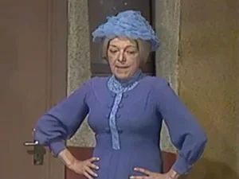

Dona Clotilde

Intérprete: Angelines Fernández.
Dubladores: Helena Samara (Chaves clássico, BKS, Gota Mágica, Gábia e desenho), Gessy Fonseca (BKS) e Beatriz Loureiro (desenho)
Caracterização: Cabelos grisalhos penteados pra trás com um nó que termina na nuca; quando se chega a ver seus cabelos soltos vemos que estes são muito compridos
Vestuário: Vestido azul de mangas compridas, com escarolas brancas na gola e botões forrados na frente e nos punhos. Usa um chapéu de flores ao estilo anos 50, como uma grande flor azul, além de calçar sandálias pretas sem taco
Personalidade: É uma velha desinteressada (é por isso que ninguém se interessa), generosa, de bom coração e de muito agradável aspecto, mas bem feia, por essa razão as crianças da vila a apelidaram de “Bruxa do 71” (ela vive na casa nº 71).
É uma solteirona que segue esperando um homem que lhe encha os braços. Para ocultar essa realidade se arma de uma falsa dignidade que a fa z ver amargada. Quando está em seu melhor humor é uma mulher acometida, amável… e paqueradora!
Realmente Dona Clotilde é uma mulher cheia de carinho, e sua face de “má pessoa” (que na verdade não é) é provocada pelas crianças da vila, a quem ela usa truques para assustá-los. Seu Madruga coopera para o seu mau humor quando despreza seus “jogos” e paqueras. Mas ela insiste, e em muitas oportunidades tenta “apanhá-lo pelo estômago”.
Bordões: “Volte a me chamar de bruxa!”, "É melhor não dizer mais nada!"